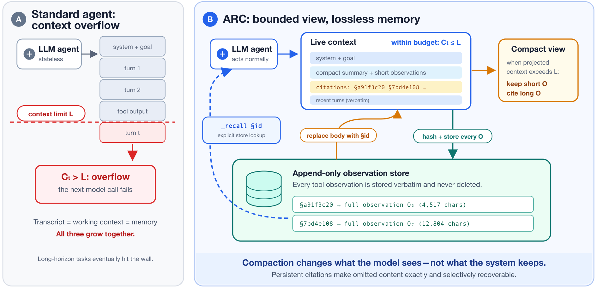
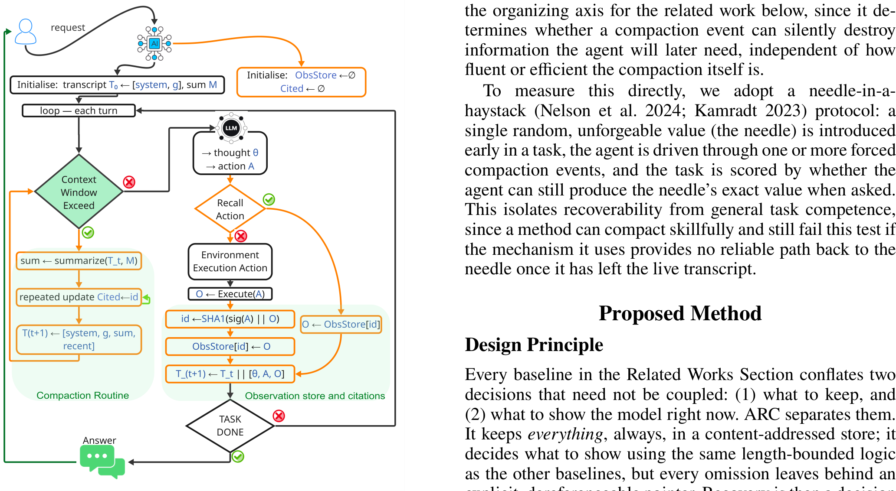

「上下文的纪律」系列 · 第 6 篇
压掉的内容，丢了就真丢了吗？
▍跑得够久的任务，终会撞墙
长任务智能体有一个绕不开的物理约束：每一轮的思考、动作、工具输出都会追加进轨迹，整个轨迹就是模型能看到的全部记忆，而且每一步都要原样重发给模型。任务跑得够久，轨迹就超过窗口，下一次模型调用直接报错。这不是性能退化，是硬失败：不管前面的推理多正确，超窗的那一刻一切停摆。
现成的办法都是压缩：截断、滑动窗口、摘要、折叠成结构化状态、外存加检索。富士通团队今年发表的这篇论文指出，这些方法有一个共通的问题：都在丢信息。截断丢的永久找不回；摘要保住大意，丢掉数字、路径、原文措辞这类细节；结构化状态没建模的字段直接消失；检索式外存存是存了，取回靠相似度，想要"上一步之前那个输出"未必检索得回来。
论文问了一个更根本的问题：压缩能不能不丢？它的回答是把两个决定拆开：系统保留什么，窗口展示什么。原文永远全量入库，窗口里只留编号引用，需要时按编号取回原样。
【人工补充位 · 建议2–4句】写一段你的经历：你遇到过的超窗是什么样的（什么任务、多大窗口、跑到第几步失败的）；你现在靠什么办法压上下文（截断／自动摘要／手动重开对话／工具自带压缩）；有没有一次"摘要压掉了后来要用的一条细节"，丢的是什么类型（数字／路径／报错原文／当时的决策理由）。
本期论文
Addressable Recall Compaction for Long Context-Window Control in AI Agents
可寻址召回压缩：面向长上下文窗口控制的智能体上下文管理
Thang Dang, Yuma Ichikawa et al.（富士通美国研究所、富士通日本、理研AIP），2026-07（arXiv:2607.25066v1）
简要结论：把每个工具输出原样存入只增存储（内容哈希作编号），窗口内的旧内容压成短引用，模型用召回动作按编号取回原文。大海捞针任务准确率99.40%（最优基线88.12%），LongBench-v2难任务子集29.97%（28.25%），同时按硬件开销模型估算省下四到七成内存带宽。
名词速查
▸ compaction（压缩）：把超长的智能体轨迹缩到上下文预算内的操作。本文按"被压掉的内容能否原样找回"给压缩方法分类。
▸ 大海捞针（needle-in-a-haystack）：在长任务早期埋入一个随机不可猜的值，测试智能体历经多轮之后能否原样报出，专门测召回失败。
▸ ObsStore（observation store）：ARC的只增观测存储，每个工具输出原样入库、永不删除。
▸ 内容寻址（content-addressed）：用内容的哈希值当作存储地址。同一内容算出的地址相同，地址稳定且可复算。
▸ LongBench-v2 Hard：覆盖单文档问答、多文档问答、长对话理解、代码理解等类型的长上下文难任务子集，311个任务，考推理不只考召回。
论文把压缩定义为"从超长轨迹产出更短轨迹"的操作，并给了一个判断标准：一个值如果在之后的某一步还能取回原样，称为可恢复；取不回，称为丢失。能够构造性产生丢失的压缩就是有损的。这个标准比"压得多省"更要紧，因为压缩事件可能悄悄毁掉智能体日后正好需要的信息，而且这一点与压缩本身写得多流畅、多高效无关。
| 做法 | 丢什么 | 还能找回吗 |
|---|---|---|
| 全文保留（不压缩） | 不丢，但轨迹一超窗就失败 | 能（窗口内时） |
| 滑动窗口 | 窗口外的轮次全部丢弃 | 不能，永久丢 |
| LLM摘要 | 被省略和改写的细节 | 不能，原文被覆盖 |
| 结构化状态 | 模式里没建模的字段 | 不能，不可逆 |
| RAG记忆 | 存储不丢 | 只能相似度召回，不保证命中 |
表 1｜五种主流压缩做法按可恢复性分类（原论文Related Works，作者整理）
论文对这一版图的总结：共同缺的是可靠的、可按址取回的召回。有些方法直接丢弃；有些只通过摘要、模式或相似度检索间接保留。ARC 补的就是这一块：观测原样入库、以稳定编号寻址、在窗口里换成短引用、按需显式取回。
"…the key limitation is the absence of reliable, addressable recall."
── 中译：关键局限是缺少可靠的、可按址取回的召回。（原论文Related Works总结句）
核心思想是把"系统保留什么"与"窗口展示什么"解耦成两个独立的决定。每个工具输出到达时，先对动作签名加输出内容算一次哈希（SHA1），以哈希前八位为编号写入只增的ObsStore，原样永久保留；同一内容两次出现，编号相同。窗口这一侧，压缩发生时长观测换成一条短引用：编号、头尾预览、长度等元信息、一行取回提示。短观测和最近几轮原文保留不动。

图 1｜标准智能体（A）与ARC（B）对照：左为轨迹三者一起增长直至溢出失败，右为窗口有界+原文只增存储，压缩改变的是模型看到的，不是系统保留的（原论文Figure 1）
窗口视图分五段，各有固定的token预算：任务前缀、确定性摘要、近期轮次原文、一页引用目录、已召回的正文，总预算压在窗口上限内。引用攒多了，更老的引用再收成裸编号，需要时用轻量的元信息查询恢复到完整引用。
压缩例程本身是确定性的，零LLM调用：截掉较老的思考、短观测保留内联、长观测替换为引用、最近轮次原文保留。不重新摘要、不改写措辞，编号在任务全程稳定有效。触发分两种模式：主动模式在每次调用前估算长度、溢出前压缩；被动模式在收到超窗报错之后压缩。两种模式跑同一套例程，行为一致。

图 2｜ARC工作流：观测经哈希入库并登记引用；窗口将超时触发压缩例程，组装成摘要加近期原文的有界视图；召回动作按编号从库中取回原文（原论文Figure 2）
取回靠一个召回动作 _recall：给定编号，从库里取回原文，不需要重新执行工具，也不依赖相似度检索。每轮限两次，防止取回本身把窗口撑爆；总预算吃紧时，最近最少使用的召回正文回退成引用。元信息查询走轻量通道，只恢复引用条目不动正文。
实验用Qwen3-8B配16k窗口、Qwen3-32B配32k窗口，补全上限4096，vLLM推理，每方法跑三个种子。两个基准分工明确：大海捞针专测召回，早期埋一个随机值，历经多轮压缩后要求原样报出；LongBench-v2 Hard考多步推理，召回只是其中一环。
| 方法 | 大海捞针 Qwen3-8B |
大海捞针 Qwen3-32B |
LongBench-v2 Hard Qwen3-8B |
LongBench-v2 Hard Qwen3-32B |
|---|---|---|---|---|
| 全文保留 | 36.80% | 2.93% | 0%（溢出） | 0%（溢出） |
| 滑动窗口 | 56.20% | 95.33% | 23.47% | 30.67% |
| LLM摘要 | 71.77% | 93.90% | 25.83% | 24.97% |
| 结构化状态 | 68.17% | 96.63% | 24.73% | 30.20% |
| RAG记忆 | 79.57% | 96.67% | 24.53% | 27.43% |
| ARC | 99.00% | 99.80% | 27.47% | 32.47% |
表 2｜两个基准的准确率（原论文Table 1–2，各方法3种子平均，作者整理）
大海捞针上，ARC在8B拿99.00%、32B拿99.80%，两模型平均99.40%；最好的基线是RAG记忆，平均88.12%。基线普遍在32B上比8B好，因为窗口更大、撞墙更晚，而ARC两个规模都贴着满分。无答案次数也是全场最少：LongBench上平均16.33次与7.33次（933次尝试计），基线在23到74之间。全文保留组的对比最直观：LongBench两个规模全零分，不是答错，是溢出后交不了卷；大海捞针上8B还有36.80%（一部分任务没撞墙），32B只剩2.93%。
LongBench-v2 Hard上优势收窄但方向一致：8B为27.47%，比该规模最优基线高1.64个百分点；32B为32.47%，比最优基线高1.80个百分点。论文对收窄的解释是：这个基准的失败多出在推理而非召回，ARC修的是召回，所以这里的增益应读作"失败中可归因于召回的部分"的下界，而不是ARC收益的上限。显著性上，配对McNemar检验显示ARC对每个基线的优势比在2.22到10.48之间，全部p<0.05；ARC失败而基线成功的对子，933次里只有37到42次（8B）与19到21次（32B）。
窗口压短了，省下的不只是token账单。论文按单张H200的屋顶线模型估了服务开销（注意是估算，不是整机实测）：在成功提交的任务上，ARC相对滑动窗口节省HBM带宽38.8%（8B）与73.5%（32B）（LongBench口径），总时间从6.53秒降到3.99秒、30.57秒降到8.11秒；大海捞针口径下省80.3%与59.3%。机制直接：上下文短了，每步推理搬运的KV缓存就小，批容量也更大。
| 方法 | LongBench带宽（8B） | LongBench带宽（32B） | 大海捞针带宽（8B） | 大海捞针带宽（32B） |
|---|---|---|---|---|
| 滑动窗口（基准） | 27.63 | 138.05 | 27.70 | 2.76 |
| LLM摘要 | 更贵24.3% | 更贵146.9% | 更贵48.9% | 更贵77.4% |
| RAG记忆 | 更贵124.9% | 更贵151.9% | 基本持平 | 省11.9% |
| ARC | 15.95（省38.8%） | 30.90（省73.5%） | 4.87（省80.3%） | 1.59（省59.3%） |
表 3｜成功任务的HBM带宽与节省（原论文Table 3–4屋顶线估算，单位GB，作者整理）
对照组里有个反直觉的数字：RAG记忆在LongBench上反而比滑动窗口更贵（带宽多124.9%和151.9%）。检索注入把上下文又撑长了。ARC是表中唯一同时提升任务成功率又降低内存流量的方法。
论文给的性质是系统级的，不依赖模型聪明。四条条件：编号是定宽、可注入的；任何压缩发生之前，原文已经原样入库；外部目录完整、窗口内目录有界；总预算受控。四条凑齐，任何入库的观测都能凭有效编号严格恢复。作者特意划了一条界线：机制保证的是按址可恢复，端到端的任务成功仍要靠模型自己选对编号、用对取回的内容。
附录里还证了一个下界：任何能在与轮次无关的窗口上限内精确恢复任意历史的系统，外部存储至少线性增长。ARC的只增存储正好一阶匹配这个下界。全量保存不是可以优化掉的实现细节，是不丢信息必须付的代价。
边界同样清楚。引用自带小幅固定的token开销（头尾预览加取回提示），论文把这项开销的量化列为待办。实验只在Qwen3家族上做，别的分词器和推理风格未验证。LongBench的对话历史类子任务上，隐式检索（RAG）仍然更好，论文把这读作一个信号：显式按址取回与隐式相似度召回是互补关系，不是替代关系。
"Lossy compaction trades context-window survival for a chance of losing exactly the fact an agent needs later, and every mainstream compaction strategy makes this trade. ARC shows the trade is not necessary."
── 中译：有损压缩用"可能恰好丢掉智能体日后需要的那条事实"的风险，换取上下文窗口的存活，而每一种主流压缩策略都在做这笔交易。ARC证明这笔交易并非必要。（原论文结论首句）
▍注记：这篇论文的边界
单一模型家族（Qwen3-8B/32B）、两个基准；引用的token开销未量化；HBM带宽与服务时间为屋顶线模型估算，非整机实测；被动触发路径用固定调用索引隔离了随机溢出时机，与真实部署的动态触发仍有距离；模型、窗口、补全上限的其余组合网格未测。难任务上的增益（+1.64/+1.80）温和，且论文自己把它读作召回归因部分的下界。
▍压而不丢，落到自己的工作流
论证链条收拢：超窗是硬失败，全文保留治不了它；主流压缩全在做有损交易；ARC把保留与展示解耦，原文入库、窗口留引用、按址取回；召回几乎不丢（99.4%对88.1%），难任务小胜，带宽省四到八成；机制有系统级保证，存储代价有下界匹配。系列连起来看：上一篇管进窗口之前放什么，这一篇管进了窗口之后怎么压而不丢。压与取的时机，现在还是规则定的；让模型自己学会这套动作，是再下一步的事。
落到自己的工作流，三个可以直接用的做法：
1. 给自己的压缩方法做一次可恢复性体检：随便挑一段最近被压掉的内容，检查能否原样取回；取不回的，数一数里面有多少细节是任务后期可能要用的（数字、路径、报错原文、决策理由）。
2. 原文外存加窗口留引用：能存原样就不要用摘要覆盖原文；引用带编号和一行取回提示，取回动作限次数，防止取回把窗口撑爆。
3. 压缩例程用确定性规则，不用LLM：截老思考、短观测内联、长观测换引用、近期原文保留。零额外调用，行为可预期，编号稳定。
【人工补充位 · 建议3–5句】结合你的工作流写评论：你的压缩现在靠什么（工具自带的压缩／手动重开对话／自动摘要）；有没有压掉过后来要用的细节，那次损失造成了什么后果；"原文外存加指针"这套做法，你会用在哪个环境（agent框架、CLI工具、还是自己攒的脚本）。
论文：Addressable Recall Compaction（arXiv:2607.25066v1，2026-07，Thang Dang, Yuma Ichikawa et al.，富士通美国研究所/富士通日本/理研AIP）。文中图表均引自原论文（Figure 1/2）；表1–3依据原论文Related Works、Table 1–2、Table 3–4由作者整理，非原图截取；引文为原文直录并附中译；数字已逐项与论文PDF原文核对；HBM带宽与服务时间为屋顶线模型估算。